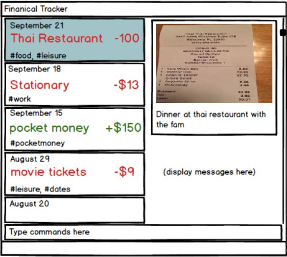

-
This is a financial tracking application. It has a GUI but most of the user interactions happen using a CLI (Command Line Interface).
-
This app provides basic expense management functions and more advanced features such as advanced searching and sorting, automatic archiving, as well as undo options for most operations.
Target Users
-
Users who can type fast, and prefer typing over mouse/voice commands.
-
Users who have too many transactions to keep track of and wants to manage their expenses more efficiently
Acknowledgements
-
Some parts of this sample application were inspired by the excellent Java FX tutorial by Marco Jakob.
-
AddressBook-Level3 project created by SE-EDU initiative at
https://se-education.org